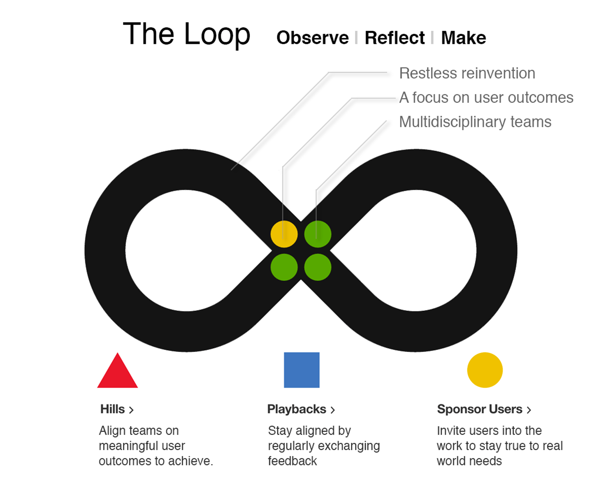

As new trends begin to emerge, technology companies are forced to reimagine their values. IBM is a company that has chosen to value design. In 1956, it was the first company to establish a corporate-wide design program. Now, the company is investing $100 million to become design-centered.
IBM DesignAccording to Karel Vredenburg, Director of IBM Design’s worldwide client program and head of IBM Studios in Canada, there are three reasons that triggered this move. This is technology, demographics, and digitization.
technology — Recent changes in technology — specifically, the cloud, analytics, and mobile — demand a different focus, and design is becoming an incredibly important differentiator in all three areas.
demographics — There’s a growing realization that Millennials are digital natives who expect a much higher level of user experience. Vredenburg recognizes that this group is distinctly different from older demographics — both as clients and employees — and acknowledged, “We have to make sure we design products and services to appeal to our millennial clients, and design internal systems to be appropriate for our millennial employees.”
digitization — Every industry — from academia to finance, healthcare to security — has now gone digital. The focus is on designing new products, processes, and services with the best attributes of digital in mind.
As IBM begins to adjust to the rapid change in technology, there is no doubt that many technology companies will follow suit. Design will become the center of most companies. IBM has been shifting their focus to design since 2012. They are responsible for hiring 1,000 designers that were all trained to tackle problems like design thinkers. This included everyone from executives to interns. If other companies follow suit, UX designers will become more in demand than ever before. Although a great change for UX designers, it also means that their role will continue to encompass a lot more. They will become relied on through every step of the process to provide insight, research, and positive results.